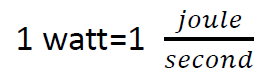
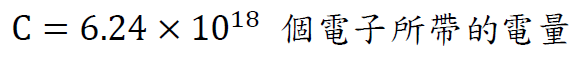
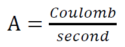

| 原子結構 |
| 歐姆定律 |
| 克希荷夫定律(Kirchhoff's laws) |
| 等效電阻 |
| 電阻溫度係數 |
| Energy is the ability to do work. Potential energy is the potential to do work. Energy is measured in Joules. Power is measured in Watts.  1 C (coulomb, 庫倫)  電流單位 A(Ampere, 安培)  1 ampere=1 coulomb of charge flowing through a certain point per second 1.5V battery: 1 Coulomb 的電荷 做 1.5Joules 的功 |